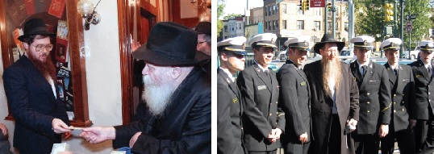

הרב עפשטיין עם חיילים מחיל הים האמריקאי שהגיעו לסיור ב-770 לפני נסיעתם לעירק | ה
קבוצת התיירים האירופאים האזינה בקשב רב להסבריו המרתקים של הרב עפשטיין בסדנה להכנת התפילין. הוא לא דיבר גבוהה גבוהה, לא ביים התלהבות. הוא פשוט דיבר מתוך הנשמה שלו, ישר אל הנשמה שלהם. לא לכל חברי הקבוצה הייתה נשמה אלוקית… חלקם היו גויים, וגם הם הקשיבו בעניין רב על ההשפעה העצומה של מצוות התפילין על חיי

אחד מחברי הקבוצה, רופא במקצועו, ניגש בסיום הסיור לרב עפשטיין, וביקש לחזור למשרדו של הסופר, הרב משה קליין, שם נערכה הסדנה בתחילת הסיור, כדי לקנות זוג תפילין. הרב עפשטיין לא היה מופתע, כיוון שפעמים רבות הובילו הסיורים הקצרים הללו לשינוי מהותי בחייהם של התיירים. אבל כאשר שוחח בדרך עם הרופא, והתברר כי הלה אינו יהודי - הוא התפלא מאוד. מדוע גוי צריך תפילין?
“לאחר שהבנתי את הכוח העצום שיש בתפילין - החלטתי שכאשר יגיעו אלי הקליינטים היהודיים שלי, לא אטפל בהם לפני שיניחו תפילין! משום כך, אני רוצה שיהיה במשרדי זוג תפילין, ובבקשה ממך - הסבר לי היטב כיצד להניח להם את התפילין, ותן לי כמה עלונים עם ההוראות המדוייקות מה צריך לומר בהנחת התפילין”…
יכולת מדהימה, לנגוע בנשמה
בחול המועד פסח התקבלה בקראון הייטס הידיעה המעציבה על פטירתו של הרב בערל עפשטיין, והוא בן 58 שנה בלבד. ילדיו - חיה, יוסף ומענדי - שחוו כבר טרגדיה אחת כאשר התייתמו מאמם לפני כעשור, התקשו לעכל את הבשורה האיומה. אך החינוך המיוחד שהעניק להם אביהם, נותן בהם את אותותיו, ולמרות השבר הגדול הם החליטו להמשיך את עבודתו הקדושה של אביהם. שנים מהילדים, חיה ויוסף, מכירים היטב את סגנון הפעילות, ואף הספיקו להשתלב ולסייע לאביהם בשנים האחרונות. כעת הם ינסו למלא את החלל הגדול שהשאיר.
כשהלכתי לנחם את הילדים האבלים, פגשתי את אחד הפעילים שעבד שנים רבות לצידו של ר’ בערל. הוא לא מפסיק להתפעל מהיכולת המדהימה שהייתה לר’ בערל לנגוע בעומק הנשמה של כל אחד. לפנות לכל תייר ברמה שלו, להקשיב לו, להבין מה השאלות שמציקות לו, והכי חשוב - לענות בסגנון כזה שהתשובה תעורר אותו ותגרום לשינוי משמעותי בחייו. בין אם התיירים היו יהודיים, ובין אם - להבדיל - היו גויים. הסיור עם הרב עפשטיין הותיר בהם חותם עמוק, ופעמים רבות חולל שינוי בחייהם. אף אחד לא יכול היה להשאר אדיש.
דרישות שלום מקוריות
למרות שמדובר במפגש חד פעמי, מוגבל מאוד בזמן, שאחריו חוזרים התיירים לשגרת יומם במקומות מגוריהם, כך שקשה מאוד לקבל אינדיקציה להשפעה ארוכת טווח - מבול התגובות החיוביות שהגיעו כל הזמן, בדואר, בדוא”ל ובמערכת התגובות של אתר האינטרנט הייעודי של הפעילות, הוכיח מעל לכל ספק כי מדובר במפעל שליחות של ממש.
לפעמים הגיעו הד”שים בדרך מקורית. יום אחד קיבל הרב עפשטיין טלפון משליח שהזמינו להשתתף בהכנסת ספר תורה. הרב עפשטיין לא הבין מה פתאום החליט השליח לצלצל דווקא אליו ולהזמינו? סיפר לו השליח, שאחת הנשים בקהילתו השתתפה בסיור עם הרב עפשטיין, והסבריו על קדושת ספר התורה חדרו כל כך עמוק ללבה ומוחה, עד שבלילה שלאחר הסיור היא חלמה על ספר התורה. בעקבות כך נכנסה לבית חב”ד, וביקשה לתרום ספר תורה לעילוי נשמת בעלה שנפטר כמה חודשים קודם לכן… ‘מכיוון שקיבלנו את ספר התורה בזכותך’, אמר השליח לרב עפשטיין המופתע, ‘לעונג הוא לי, להזמין אותך’.
בתקופת כינוסי השלוחים הזדמן לרב עפשטיין לקבל הרבה דרישות שלו מהתיירים ‘שלו’. השלוחים סיפרו לו בהתלהבות על ההשפעה האדירה שחולל הסיור בחיי מקורביהם. הם חזרו עם חיות מיוחדת, ופתאום שמירת התורה והמצוות הפכה להיות עבורם חוויה רוחנית מיוחדת, שאי אפשר להחמיץ. רבים מהם נהיו מעורבים יותר בחיי הקהילה, הן בהשתתפות בשיעורים ובתפילות, והן בתרומות הכספיות כהשתתפות בפעילות החב”דית.
באחד הסיורים עם קבוצת תיירים דתיים מפלורידה, תוך כדי שהרב עפשטיין מרצה בחיות על החיים החסידים בשכונה - אחד התיירים, ששם לב שהדברים נשמעים לו מוכרים מאיזשהו מקום, נזכר לפתע כי בילדותו השתתף כבר בסיור כזה, שאורגן מטעם הקהילה הרפורמית בה היה חבר. הוא עצר את חברי קבוצתו, וסיפר להם בהתרגשות, כי הסיור ההוא השפיע על רבים מחבריו, והוא עצמו שהפך להיות שומר תורה ומצוות.
דוגמאות אלו הן רק טיפה מן הים מפעילותו העצומה של הרב עפשטיין, שמאז שנת תשמ”ב, במשך כ–35 שנה, הדריך יותר מרבע מיליון תיירים, רובם יהודיים, שהגיעו לראות חיים יהודים על קצה המזלג, וקיבלו מנה גדושה של השקפת עולם יהודית–חסידית.
גולת הכותרת: בית רבינו שבבבל
לצד ההסברים על יהדות וחסידות, דאג הרב עפשטיין לניצול מירבי של זמן הביקור, וגולת הכותרת שלו הייתה הביקור ב–770. הוא היה נכנס עם התיירים בדלת הראשית של 770, אל המבואה הסמוכה לחדרו של הרבי, ושם היה מספר להם על הרבי מלך המשיח, והמופתים העצומים שממשיך לחולל עד עצם היום הזה. אחר–כך היה פונה עם הגברים לזאל הגדול של 770, שם הניח להם תפילין. לרבים מהם זו הייתה הפעם הראשונה בה הניחו תפילין.
הנקודה העיקרית של הביקור, בעיניו של הרב עפשטיין, הייתה - לקשר יהודים לרבי מלך המשיח. הוא שאף להכיר להם את הרבי, להכיר להם את התורה של הרבי, ולהכיר להם את השכונה של הרבי. הכל סביב נקודה אחת: רבי.
כמים הפנים לפנים, גם הרבי הראה התעניינות מיוחדים בסיורים הללו. ר’ בערל סיפר פעם, כי ממזכירות הרבי פנו אליו בבקשה לעדכן אותם בכל פעם שמגיעה קבוצת תיירים לסיור. המזכיר סתם ולא פירש, אבל לר’ בערל הייתה תחושה ברורה שהבקשה הזאת הגיעה מלמעלה, מהרבי בעצמו. ואכן, גם בשנים בהן התפלל הרבי מנחה בזאל הקטן, מידי פעם אירע, שכאשר הגיעה קבוצה גדולה של תיירים - חרג הרבי ממנהגו וירד להתפלל בבית הכנסת הגדול.
הביקור בקראון הייטס שחולל מהפך משפחתי
הרב בערל עפשטיין גדל במשפחה לא דתית במדינת טנסי שבארצות הברית. בתור חובב ספורט מושבע, שיחק בקבוצת כדורגל שאיגדה בתוכה צעירים יהודיים רבים, ובזה למעשה הסתכמה יהדותו. בהומור האופייני לו, התבטא פעם שבחגיגת הבר–מצווה שלו היה יותר ‘בר’ מ’מצווה’…
בשנת תשל”ו נפגש אחיו עם הרב זעליג ריבקין, משלוחי הרבי מה”מ, במסגרת לימודיו באוניברסיטה. היה זה בתקופת מבצע אנטבה המפורסם; גל של גאווה יהודית הציף את היהודים ברחבי העולם. גלי הגאווה לא פסחו גם על אחיו, ומתוך הזדהות עם עם ישראל, והערכה לבורא העולם על הניסים שעושה לעמו - החליט להתגייס לצה”ל. הרב ריבקין הסביר לו כי ייטיב לעשות אם ירתום את רגשי הערכתו לבורא העולם - בהתחזקות בשמירת התורה והמצוות.
כעבור תקופה קצרה עבר האח ללמוד בישיבת חב”ד במוריסטאון, כשהוא הופך בהדרגה לחבדני”ק מן השורה.
גם בלבו של בערל הצעיר הנצו ניצנים ראשונים, בדמות לימוד הסטוריה יהודית יחד עם החלטה להכניס לפיו אוכל כשר בלבד. מכאן הייתה הדרך קצרה לכך שהמשפחה כולה, כולל ההורים, הפכו את אורח חייהם והיו לשומרי תורה ומצות, משפחה חסידית לתפארת.
הרב דבורקין מגלה את שורשי המשפחה
העובדה שמשפחתם - למרות העובדה שבעירם לא היה שליח של הרבי - הפכה כולה לחסידי חב”ד, התמיהה גם אותם. כעבור תקופה לא ארוכה, קיבלו את התשובה לתמיהתם. היה זה בעת סעודת שבת בביתו של הגאון החסיד הרב זלמן שמעון דבורקין, רבה של שכונת ‘קראון הייטס’. הרב דבורקין התעניין אודות מוצאו של בערל הצעיר. זה השיב כי הוא מגיע מטנסי.
“ומשפחתך, מה מוצאה?”
“מרוסיה”, השיב.
“וברוסיה עצמה מאיזה עיר?” המשיך הרב להתעניין.
כששמע שהמשפחה מגיעה מהעיירה שצעדרין, וכי הוא נכד נכדו של ‘איצ’ה נחום דער שמיט’ צהבו פניו של הרב, והוא התרומם מכיסאו בהתרגשות: “אני זוכר את ר’ איצ’ה נחום עוד מהיותי ילד; הוא בעצמו היה חסיד חב”ד… לא פלא אפוא שכל משפחתך, הפכה באתערותא דלעילא, לחסידי חב”ד…”
משבתון מוצלח לצעירים - למערך סיורים
בשנת תשל”ח נמשך גם בערל הצעיר בעקבות סב–סבו, והחליט לגלות למקום תורה. גם הוא, כאחיו, הגיע ללמוד בישיבת ‘תפארת בחורים’ במוריסטאון, שם עשה חיל בלימודיו, וכעבור זמן קצר הפך ל’תמים’ מן המנין. באחד הימים פנה אליו הרב אברהם ליפסקר, ראש הישיבה, בבקשה לארגן שבתון לנוער אמריקאי במסגרת הקמפוס הישיבתי. בערל נעתר, וחרף הקשיים שנערמו בדרכו, ארגן שבתון מוצלח בו השתתפו עשרות צעירים בגילאי ה’עשרה’.
בעקבות ההצלחה, הציע לו חבר קרוב לארגן קבוצות נוספות שיגיעו לסיור מודרך ל–770, ואולי אפילו לשהות של שבת. ההצעה נפלה על אזניים קשובות, אך הדרך ליישומה נמשכה עוד שנים אחדות, או אז הביא מידי פעם קבוצות לבקר בהיכלו של מלך. בסיורים אלו נוכח בהשפעה הכבירה על משך חייו של האמריקאי הצעיר, ובעקבות זאת החליט למסד את הפעילות לארגון רשמי שתפקידו להביא קבוצות מאורגנות של מטיילים, צעירים ברובם, אל מקור האור והחיות של העולם. לארגון שלו קרא “חסידיק דיסקבר וולקם סנטר”.
נישואיו עם ב”ג דינה אסתר ע”ה, לא רק שלא הורידו את רף ההתמסרות לשליחות, אלא אף חיזקו אותה, כאשר רעייתו ניצבת כעזר לימינו, בהדריכה בעצמה קבוצות נשים ונערות בעזרת נשים של 770 וברחבי השכונה. יותר מעשרים שנה נשאה את תפקידה בהצלחה, עד לפטירתה הטראגית לפני כעשור.
רוב הסיורים התנהלו, כצפוי, מידי יום ראשון, יום השבתון הרשמי של ארצות הברית. הסיור התחיל בשעת הרצאה המהווה הכנה מקדימה לפני הביקור עצמו. במהלך ההרצאה דיבר הרב עפשטיין על חשיבות המקומות בהם עומדים לבקר, ופתח בפני הנוכחים צוהר לעולמה המופלא של היהדות ושל חסידות בפרט; הוא פרש את עקרונותיה של חסידות חב”ד וחשיבות לימוד חסידות (“ב–770 תוכלו לראות את תלמידי הישיבה לומדים את ה’חסידיק פילוספי’, במשך שלוש שעות מתוך היום”). הוא דיבר גם על טהרת המשפחה (“כסף בא וכסף הולך, ומה שנשאר זה רק הילדים”); הוא לא התבייש לדבר על חשיבות לימוד התורה ושמירת המצוות, יחד עם דיון על אודות מעלתו העצמית של היהודי (“יהודי אף על פי שחטא ישראל הוא - כי יש לו נשמה שהגיעה אליו בירושה דרך אמו היהודיה, מבורא העולם בהר סיני. לעומתו, גוי שרוצה להתגייר, עליו לעבור גיור על פי ההלכה דווקא, בכדי לזכות לאותה מתנה נפלאה - הנשמה”).
הוא הדריך אותם צעד אחר צעד, להגיע בכוחות עצמם למסקנות המתבקשות אודות חשיבות חינוך הילדים וחינוך יהודי כשר, וזאת כתשובה לתופעת ההתבוללות ר”ל. התיירים, ובעיקרם הצעירים, היו מרעיפים עליו שאלות למכביר; מהו אוכל כשר, מהי מעלת השבת ועוד שאלות בקשת רחבה של נושאים. ובשנים האחרונות הנושא ה’חם’ הוא, איך לא, המלך המשיח - מהו, מיהו ומה תפקידו?!
באחד הסיורים שאל אחד התיירים את הרב עפשטיין: איך חב”ד מסתדרת היום בלי רבי? הרב עפשטיין לא התבלבל והשיב בפשטות: “הרבי לא עזב, הוא כאן איתנו!”. כמנהגו, הוא הסביר במילים קצרות ותמציתיות שלא שייכת מציאות של דור שמתנהל ללא מנהיג אוניברסאלי שדואג לכל אנשי הדור, ועל כן הרבי מנהיג גם כיום, לא רק את חב”ד, אלא את אנשי הדור כולו.
“להביא יהודים לרבי. את השאר - הרבי כבר פועל”
בראיון שהעניק לפני כעשור ל’בית משיח’, סיפר הרב עפשטיין כי הארגון ‘חסידיק דיסקבר וולקם סנטר’ מוכר כבר לכל אנשי התיירות בניו–יורק, ובאמצעותם מגיעים קבוצות מטיילים מכל הגילאים ומכל העולם, ביניהם גם רפורמים וקונסרבטיבים. פעמים קורה ומגיעים גם קבוצות גויים כחלק ממסלול סיור דתי כולל בניו–יורק רבתי. אבל עיקר ההתמקדות היא במבקרים יהודיים ובצעירים בגילאי ה’עשרה’ בפרט.
דווקא בשל העובדה שהצעיר האמריקאי מוקף בכל תענוגי עולם הזה, הוא מחפש משמעות תוכנית יותר לחייו. “זה נשמע אולי מוזר”, אמר הרב עפשטיין, “אבל נערים צעירים בגילאי 16–17 הרעיפו עלי שאלות מתעניינות בנושאים עמוקים ביהדות כמו אמיתיות התורה ונצחיותה, גיל העולם, ההבדל התוכני בין גוי ליהודי וכו’. זהו בדיוק חתך הגיל בו צעירים מתחילים לחשוב על עתידם, ועל מה הם רוצים להיות כאשר יגדלו. הילד היהודי אוהב מאד את המסורת, אולם בהעדר חינוך אודות חשיבות שמירת התורה והמצוות, הוא נוטש את זיקתו ליהדות בגיל מבוגר יותר. הרבה נערים הפכו לשומרי תורה ומצוות בעקבות הביקור שלהם ב–770 במהלכו נחשפו לאהבת ישראל בלי גבולות, לחיות יהודית ולשמחה אמיתית שכמותם לא ראו בשום מקום אחר בעולם. רעייתי ע”ה דיברה פעם עם צעירה על חשיבות שמירת טהרה, ובתום השיחה החליטה לבסס את ביתה החדש על יסודי המצווה כדת וכדין…”
כאשר שאלנו אותו מה בעיקר ‘לוקח’ את הצעירים במהלך הסיור, הרב עפשטיין השיב בפשטות: “ריקוד ה’יחי’ בסוף המניין של הרבי מלך המשיח! לראשונה בחייהם הם חווים שמחה יהודית אמיתית וטהורה. אף פעם לא יצא להם לרקוד בריקודים נפרדים, ועוד בבית כנסת. פתאום הם מרגישים שכל מה שחוו עד עתה, היה שקרי ולא כיף אמיתי, וכשרואים אמת - נסחפים. גם העובדה שהצעירים שהניחו להם תפילין (לחלקם בפעם הראשונה בחיים) רוקדים יחד איתם - שובה אותם וזה משנה אותם לכל החיים.
“ההשפעה של הבאת מקורב ל–770, היא בלתי ניתנת להשערה. מסתבר שבמקום הקודש של 770, ההשפעה היא לא בקנה מידה שאנחנו מכירים. עלינו מוטל אפוא להביא יהודים לרבי ואת השאר הרבי כבר פועל מאליו”.
על שיטות הפעולה שלו, סיפר הרב עפשטיין: “הרעיון הוא לא רק להראות להם מקומות ומושגים, אלא להיכנס לנשמתם ולשנות אותם. במלים אחרות לחשוף אותם לנשמה החבויה שבהם. זה נשמע אולי פשוט, אבל זה דורש עבודה רבה. צריך להביא אותם למצב בו הם בוטחים במרצה, ולא מתביישים לשאול שאלות שמציקות להם. אני רואה במוחש ששאלה של ילד משפיעה לפעמים הרבה יותר מאשר שעות של האזנה להרצאה.
“אחרי הכנה מתאימה הבנים נכנסים איתי, או עם הרב ישראל בער קפלן, לבית הכנסת, בעוד הנערות עולות עם מדריכה לעזרת הנשים. הבנים מניחים תפילין, מקבלים הדרכה על מבנה בית הכנסת, על הפעילות הנעשית במקום. הם מתפללים תפילה אחת עם הרבי, כאשר בסיום התפילה הם מצטרפים לריקוד “יחי”.
“כמו בכל סיור מודרך הם מקבלים הדרכה על ההיסטוריה של המקום וחשיבותו הערכית, כאשר לצד זה הם מקבלים מנת אידשיקייט מוגברת. כך לדוגמה, כאשר אנו עומדים על יד חדרו הק’ של הרבי, הם שומעים על כתב ה–CNN שהגיע לרבי בחלוקת דולרים וקיבל מהרבי מסר להעבירו לכל בני האנושות, כי משיח מאד קרוב ועל כל אחד ואחת להוסיף במעשים טובים כדי להיות מוכן לקבל את פניו.
“הסיור ממשיך בספרייה של הרבי, שם הם שומעים הסבר על מהותו של ספר קודש והלימוד בו, חשיבותם הערכית של המוצגים הנמצאים שם וכד’ ומשם ממשיכים ללשכת ‘הסופר’, אצלו הם נתקלים לראשונה בחייהם, לתדהמתם, באדם שכותב בנוצה ודיו. הם לומדים על תהליך עשיית התפילין, ספרי התורה והמזוזות. רבים מהם, בעקבות החשיפה לערך המיוחד של התפילין מחליטים להניח תפילין כל יום.
“בהמשך נכנסות המבקרות אל המקווה שם הן מקבלות מידע על קצה המזלג על אודות חשיבות הקדושה והטהרה בעם ישראל. לסיום נכנסים למאפיית המצות - המהווה אף היא אטרקציה של ממש למטיילים - שם הם נוכחים באפייה בדיוק כפי שנעשתה לפני אלפי בשנים. הם גם מקבלים הסבר מפורט על סגולתו של ‘מאכל האמונה’. לעיתים יש אפשרות לבקר בגלרייה היהודית של קראון הייטס. בתום הסיור מתפזרים המבקרים לקניות בשכונה, כשרוב הקניות נעשות בתחום מוצרי יודאיקה”.
בין שלל הקבוצות שהגיעו במהלך השנים, היו כמובן קבוצות מיוחדות. למשל, פעם הגיעו חיילים מחיל הים האמריקאי קודם שיצאו לפעולה בעיראק. הם הרגישו צורך להגיע לקבל ברכות מהרבי, שלפני יותר מעשור עודד ואף ניבא נבואות מדויקות אודות המצב במפרץ הפרסי. בסיום הביקור התבטאו בהתרגשות כי המקום נתן להם כוח לקראת יציאתם לעיראק כחלק מהצדק והיושר העולמי לקראת ביאת משיח, כפי שהרבי דיבר לפני שנים.
פעילות חדורה משיח
כאשר נשאל הרב עפשטיין כיצד הוא מתמודד עם השאלה שנשאלת פעמים רבות במפגשים עם חסידי חב”ד: ‘האם לדעתך הרבי משיח?’ - הוא ביקש קודם כל להדגיש כי הפרמטר ‘אופן המתקבל’ אינו ‘אמת מידה’ האם לפרסם או חלילה שלא, אלא זו תביעה לעבוד קשה בכדי שהמסר יחדור לכל אחד לפי הכלים שלו.
“המבקרים מגיעים בסך הכל לשלוש שעות, ויש זמן מאד קצוב לבצע את השליחות של הרבי להכין אותם לקבלת פני משיח צדקנו. למעשה, רוב המבקרים אין להם שמץ של מידע ביהדות. לדידם, שמירת התורה והמצוות ואמונה ברבי כגואלם של ישראל, חדא מחתא הוא. ויש להפנים בהם את המסר הזה כמו המסר הזה. אמנם, פעמים רבות שואלים ומתעניינים בנושא הזה ספציפית, וזה נובע מרצון לקבל ולהתבטל אל הלמעלה מן השכל - האמונה”.
המורה ששינה את תוכנית חייו
מידי יום ראשון היו זוכים המבקרים “שלהם” ליחס מיוחד מהרבי. לפנינו סיפור אחד מתוך רבים: באחד מימי ראשון הגיע מורה מ’ישיבה–יוניברסיטי’ למעמד חלוקת הדולרים. מורה זה הביא בכל שנה תלמידים לביקור ב–770. זה פנה אל הרב עפשטיין ושאלו האם תיתכן אפשרות שהרבי יחלק מטבעות של דיימס [חמשה סנט] לילדים. הרב עפשטיין הסביר כי הדבר לא תלוי בו, אולם הוא יכול להפנות את הבקשה למזכירות. בפועל, נשכח הדבר מלבו ורצונו של המורה לא בא לידי פועל. שנה חלפה והמורה שוב הגיע ל–770 בהביאו עמו קבוצה לביקור. לנגד עיניו הנדהמות של הרב עפשטיין, עבר הרבי בין הילדים והילדות (שירדו מעזרת נשים, אל שולי בית הכנסת) וחילק לכל אחד ואחת מטבע של חמש סנט. בסיום החלוקה ניגש הרבי אל המורה ונתן לו שתי מטבעות ואף שוחח עימו משפטים אחדים.
שש שנים חלפו מאז, והרב עפשטיין נפגש עם המורה בשמחה משפחתית. המורה ניגש אליו בהתרגשות רבה: “לא סיפרתי לך עדיין מה קרה באותה פגישה. הייתה זו השנה האחרונה שלי כמורה בישיבה–יוניברסיטי; כאשר הרבי ניגש אלי, הוא נתן לי שתי מטבעות, כשהוא מבטא במילים ספורות את הנחת רוח הנפלאה שגרמו הילדים…
“הרגשתי”, המשיך המורה בסיפורו, “שהרבי רואה ברוח הקודש שאני עומד לעזוב את עבודת החינוך, והוא ניסה להשפיע עלי בעדינות שלא לנטוש את שדה החינוך. החלטתי אפוא לבטל את תכניתי המקורית, והמשכתי לחנך; אולם מאז הפכתי לאחד המחנכים העיקריים במוסד. במרוצת שש שנים אלו, פיתחתי קו חינוכי מיוחד לחינוך צעירים על טהרת הקודש, שהפך במשך הזמן לקו יסודי בבתי ספר נוספים - והכל בברכתו של הרבי”, סיים המורה את סיפורו המרגש…